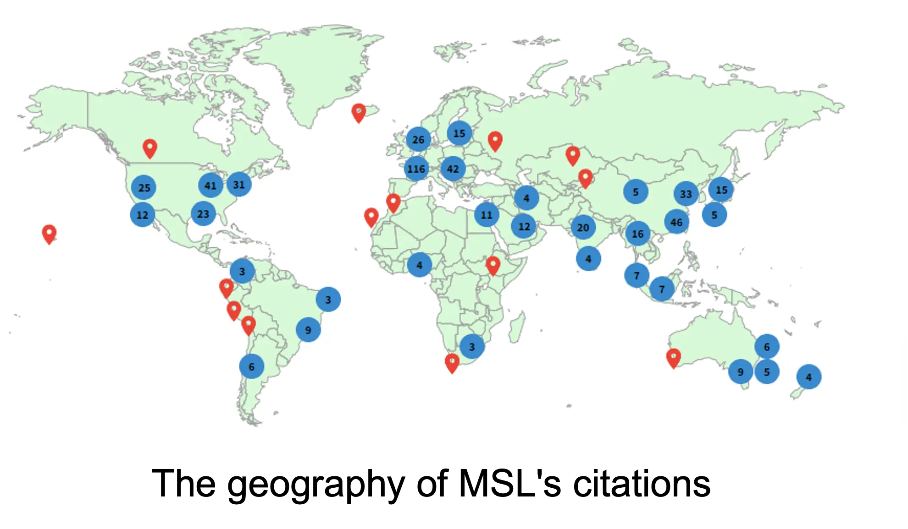

Location-aware technologies and big data are transforming the ways we study and understand human behavior. At MSL@PolyU, our mission is to pioneer geospatial solutions to propel human mobility science, a burgeoning field that seeks to model and predict patterns of movement, as well as influence the ways people navigate through urban environments and the broader earth system.
